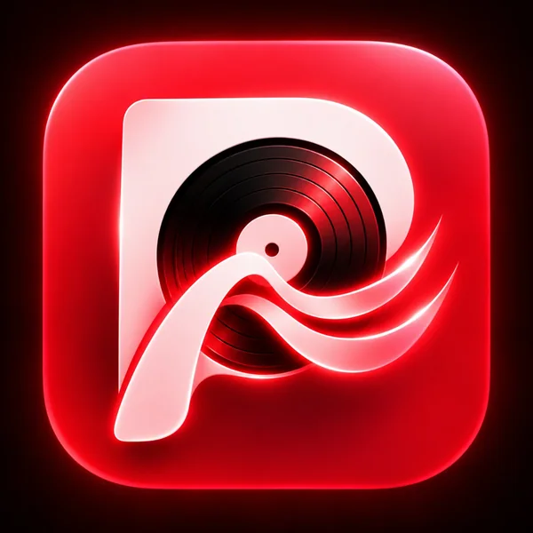
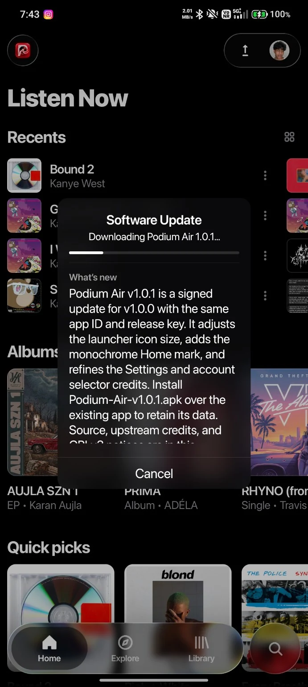

No interruptions.
No ads in your listening flow.

PODIUM AIRPODIUM AIR · FOR THE LOVE OF LISTENING
Stream, save, and rediscover your music.
Keep the soundtrack. Lose the interruptions.
ANDROID · WINDOWS · macOS
Every download is another reason to keep building. This is the movement, measured.
APK download events, including repeat downloads. Refreshes automatically every minute. Verified snapshots are used when GitHub is unavailable.
Start with the music you love. Keep it playing while your phone is in your pocket, your screen is off, or life takes you somewhere else.
No ads in your listening flow.
Background playback that stays with you.
Download songs for your offline moments.
Your local music and online discoveries, together.
03 / INSIDE PODIUM AIR
A listening home that moves with you. Browse, pick a track, and stay in the moment.
Listen Now brings recent tracks, albums and quick picks together.

CONTINUOUS / PLAYBACK
AutoMix and crossfade keep your listening flowing.
IN SYNC / LYRICS
Follow the lyrics and stay close to the music.
Import your Spotify playlists and keep discovering.
A sleep timer and playback controls, tuned to the way you listen.
Update Podium Air directly inside the Android app.
Find your download05 / THE ORIGIN
One person. An idea that wouldn’t quit.
Prem wanted this app. So Prem built it.
Prem tried making Podium. Twelve attempts didn’t become the app Prem had in mind. Prem kept going.
The thirteenth attempt became Podium: a home for the songs already on your phone.
Podium made room for local music. But Prem wanted Podium users to listen online too.
That next chapter had a name: Podium Air.
Prem coded it. Then Podium Air dropped.
A personal idea became an app for anyone who loves to listen.
For the songs already yours. A local, offline music player with its own identity.
For the music out there waiting to be heard. Stream, discover, and download.
07 / YOUR NEXT MOVE
Android 8.0+ Latest stable v1.0.2
Your Android browser may ask you to allow installation from this source.
Desktop beta: Windows installers are unsigned; macOS builds are unsigned and unnotarized.